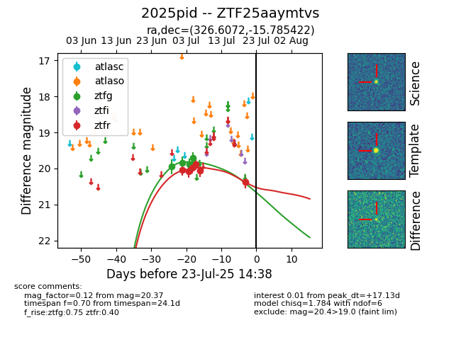

Target ZTF25aaymtvs at 2025-07-23 14:38, see:
FINK: fink-portal.org/ZTF25aaymtvs
Lasair: lasair-ztf.lsst.ac.uk/objects/ZTF25aaymtvs
ALeRCE: alerce.online/object/ZTF25aaymtvs
TNS: wis-tns.org/object/2025pid
YSE: ziggy.ucolick.org/yse/transient_detail/2025pid
alt names
ZTF25aaymtvs (ztf,fink)
2025pid (tns,yse)
coordinates:
equatorial (ra, dec) = (326.6072,-15.78542)
galactic (l, b) = (37.9719,-45.74557)
photometry
last ztfg=19.70, ztfr=20.37
5 ztfg, 6 ztfr detections
